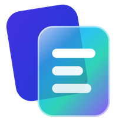

وفادار ترجمہ
جملہ بہ جملہ، اسی ترتیب میں، بغیر خلاصے، بغیر کمی، بغیر اضافے کے۔ ایکسٹینشن ترجمہ کرتی ہے، وضاحت نہیں۔

1.2 میں نیا: کسی بھی سائٹ پر ویڈیوز کی ڈبنگ
تکنیکی دستاویزات اور پروگرامرز کی ویب سائٹس کو آپ کی زبان میں وفاداری سے ترجمہ کرتی ہے، کوڈ کو کبھی چھوئے بغیر۔

ان سب کے لیے جو غیر ملکی زبان کی دستاویزات سے پریشان ہیں: سرکاری دستاویزات، GitHub کی README فائلیں اور issues، Stack Overflow، فورمز، تکنیکی بلاگز، کانفرنس کی تقاریر۔
جملہ بہ جملہ، اسی ترتیب میں، بغیر خلاصے، بغیر کمی، بغیر اضافے کے۔ ایکسٹینشن ترجمہ کرتی ہے، وضاحت نہیں۔
کمانڈز، فنکشنز، API، راستے اور URL کبھی ترجمہ نہیں ہوتے۔ لنکس، جلی متن اور کوڈ بلاکس اپنی جگہ رہتے ہیں۔
بطورِ طے شدہ آپ کے براؤزر کی زبان، 37 زبانوں میں سے۔ روسی ڈویلپر کو روسی ملتی ہے، جاپانی کو جاپانی۔
ٹیوٹوریلز اور تقاریر: سب ٹائٹلز ویڈیو پر براہِ راست ترجمہ ہوتے ہیں، YouTube سمیت۔ سب ٹائٹلز نہیں؟ آواز مفت میں تحریر ہوتی ہے (Groq Whisper)۔ بلند آواز میں پڑھنا اختیاری۔ ڈبنگ: ترجمہ براؤزر کی آواز میں بولا جاتا ہے۔
Gemini، Groq، Mistral، OpenRouter کے مفت درجے، یا مقامی طور پر Ollama۔ ادائیگی والی کلید حد مقرر کرنے تک بند رہتی ہے۔
متن کو بدل دیتی ہے یا ہر جملے کے نیچے ترجمہ دکھاتی ہے۔ ایک کلک یا Alt+Shift+T سے بالکل اصل پر واپسی۔
کوئی شماریات نہیں، کوئی ٹریکنگ نہیں۔ کلیدیں آپ کے براؤزر میں رہتی ہیں۔ حساس صفحات کبھی خود بخود ترجمہ نہیں ہوتے۔
انگریزی میں دستاویزات کا ایک ٹکڑا۔ موڈ بدلیں: متن آپ کی زبان میں آ جاتا ہے، کوڈ اپنی جگہ رہتا ہے۔
Call readFile() to load the file, then JSON.parse() to turn it into an object.فائل لوڈ کرنے کے لیے readFile() کال کریں، پھر اسے آبجیکٹ میں بدلنے کے لیے JSON.parse()۔
import { readFile } from "node:fs/promises";
const text = await readFile("config.json", "utf8");
const config = JSON.parse(text);کوڈ بلاک، فنکشنز کے نام اور لنک تینوں موڈز میں ایک جیسے ہیں۔
انگریزی میں ایک لیکچر: ترجمہ تصویر پر، اصل جملے کے نیچے، براہِ راست نظر آتا ہے۔ یہاں ایک نقل ہے۔
npm install lru-cache.پہلے، npm install lru-cache سے لائبریری انسٹال کریں۔fetch() with cachedFetch().پھر، fetch() کی ہر کال کو cachedFetch() سے بدل دیں۔


Firefox: addons.mozilla.org سے ایک کلک میں۔ Chrome، Edge اور Brave: اسٹورز میں اشاعت تک، چند کلکس میں ہاتھ سے۔
chrome://extensions کھولیں (یا edge://extensions، brave://extensions)۔addons.mozilla.org سے انسٹال کریں
Firefox 140 یا اس سے نیا۔ اپ ڈیٹس خود بخود آتی ہیں۔
about:debugging#/runtime/this-firefox کھولیں۔:free ماڈلز)، یا Ollama انسٹال کریں۔ بغیر سب ٹائٹلز والی ویڈیوز کی آواز کے لیے Groq استعمال کریں۔جی ہاں۔ ایکسٹینشن مفت اور اوپن سورس ہے۔ یہ فراہم کنندگان کے مفت درجوں پر آپ کی اپنی کلیدیں، یا آپ کے کمپیوٹر پر Ollama استعمال کرتی ہے۔ یہ کبھی ادائیگی والی کلید پر نہیں جاتی، اور ادائیگی والی کلید تب تک بند رہتی ہے جب تک آپ خود روزانہ حد مقرر نہ کریں۔
بلٹ اِن ترجمہ فنکشنز کے نام، کمانڈز اور کبھی کبھی کوڈ بھی ترجمہ کر دیتا ہے، اور اکثر لے آؤٹ بگاڑ دیتا ہے۔ DevDocTrad کوڈ، شناخت کنندگان اور URL پہچان کر انہیں کبھی نہیں چھیڑتی، لنکس اور فارمیٹنگ برقرار رکھتی ہے، اور اصل اور ترجمہ ساتھ ساتھ دکھا سکتی ہے۔
پاپ اپ میں «ویڈیوز کی آواز کا ترجمہ» آن کریں یا Alt+Shift+V دبائیں۔ اگر ویڈیو میں سب ٹائٹلز ہوں (YouTube، تقاریر، کورسز) تو وہ ترجمہ ہو کر تصویر پر دکھائے جاتے ہیں۔ ورنہ آواز چند سیکنڈ کے ٹکڑوں میں کاٹی جاتی ہے، Groq Whisper آپ کی مفت Groq کلید سے اسے تحریر کرتا ہے، پھر ترجمہ ہوتا ہے۔ اسپیکر کا بٹن ترجمہ براؤزر کی آواز میں پڑھتا ہے۔ کچھ بھی ادائیگی والا نہیں۔ ڈبنگ کے لیے «سب ٹائٹلز + ترجمہ شدہ آواز (ڈبنگ)» منتخب کریں: براؤزر کی آواز ویڈیو کے ساتھ ساتھ ترجمہ بولتی ہے۔
یہ صرف آپ کے براؤزر کے مقامی اسٹوریج میں رکھی جاتی ہیں، کبھی سنک نہیں ہوتیں اور صرف متعلقہ فراہم کنندہ کو بھیجی جاتی ہیں۔ یہ کبھی کسی URL، لاگ یا صفحے کو بھیجے گئے پیغام میں ظاہر نہیں ہوتیں۔
صرف آپ کے منتخب کردہ فراہم کنندہ کے پاس، یا Ollama کے ساتھ کہیں نہیں۔ مفت درجوں پر Google اور Mistral متن دوبارہ استعمال کر سکتے ہیں: نجی صفحات کے لیے Ollama بہتر ہے۔ آواز کے لیے صرف مختصر آڈیو ٹکڑے Groq کو جاتے ہیں۔
37 ہدف زبانیں، جن میں اردو، انگریزی، فرانسیسی، ہسپانوی، جرمن، روسی، چینی، جاپانی اور عربی شامل ہیں۔ صفحات کسی بھی زبان میں ہو سکتے ہیں۔ ایکسٹینشن کا انٹرفیس 36 زبانوں میں ہے اور براؤزر کی پیروی کرتا ہے (اردو انٹرفیس ابھی انگریزی میں ہے)۔ یہ سائٹ بھی 37 زبانوں میں موجود ہے۔
جی ہاں، MIT لائسنس: آپ اسے استعمال، تبدیل اور دوبارہ تقسیم کر سکتے ہیں، بشرطیکہ لائسنس کا نوٹس برقرار رکھیں۔